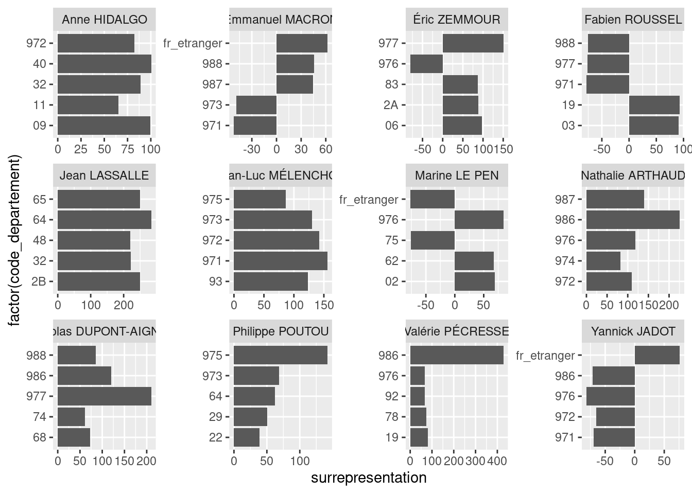
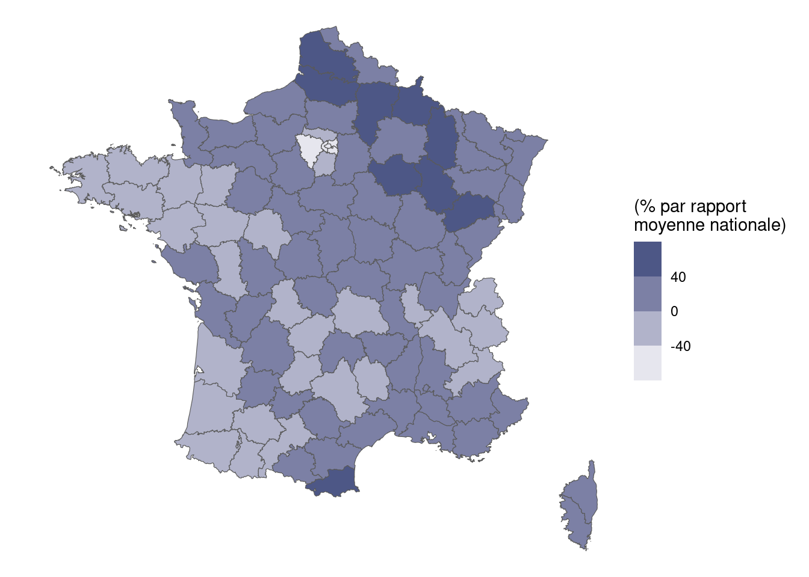
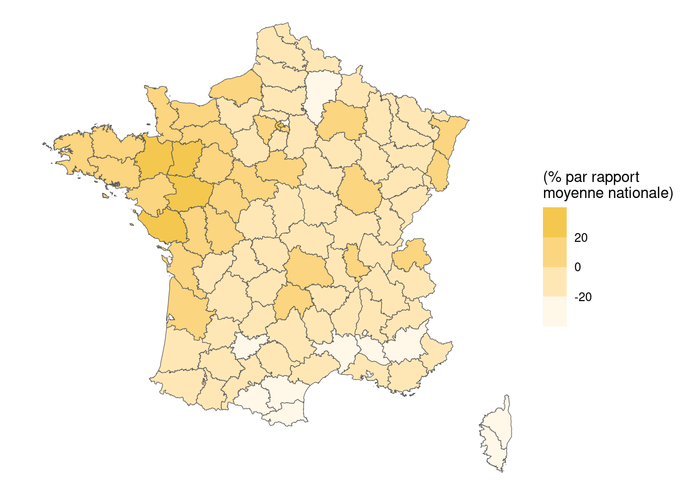
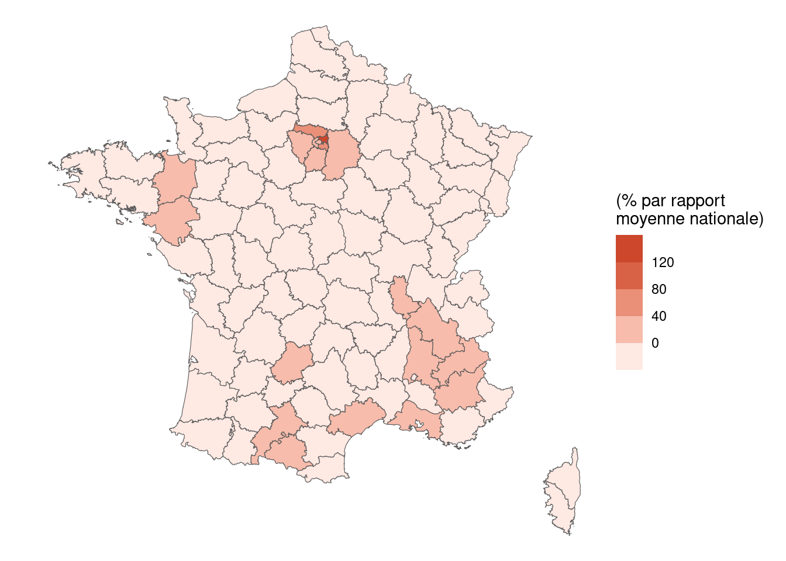
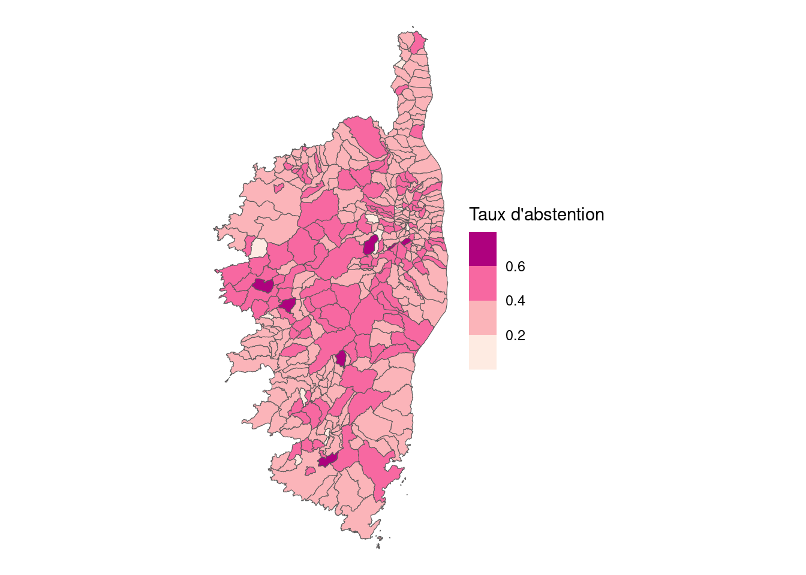

df <- read_csv(
'https://www.data.gouv.fr/fr/datasets/r/182268fc-2103-4bcb-a850-6cf90b02a9eb'
)Evaluation
Ce chapitre présente la consigne pour l’évaluation de l’année 2023-2024.
L’objectif de ces exercices est de vous amener à explorer la richesse des données électorales fines. Vous pourrez ultérieurement aller plus loin pour essayer de relier les résultats de vote à des variables socioéconomiques disponibles à la même échelle.
Les consignes générales sont les suivantes:
Consignes générales
- Envoyer par mail avant le XX janvier 2024 deux documents: un fichier
.qmdreproductible mélangeant vos réponses aux questions et vos analyses et le.htmlgénéré grâce à celui-ci ; - Le
.htmlne présente pas les exemples de code, pensez donc à mettreecho: falsedans les options du header ; - N’oubliez pas d’ajouter les informations personnelles standards (auteur, titre) dans votre document ;
- Essayez de soigner le
.htmlrendu. Vous pouvez néanmoins avoir des sorties graphiques ou tableau au style différent de ceux que j’ai mis en exemple si vous avez envie de donner une touche personnelle à votre rapport ; - Le document
.qmddoit être reproductible, c’est-à-dire que si je clique sur le boutonRender, cela va fonctionner.
Le code d’import des données est directement mis à disposition pour vous permettre de démarrer les exercices.
Explorations générales
Question 1
Créer ou mettre à jour les variables suivantes:
code_commune: En utilisant la variable déjà existante et le département, remplacer la valeurcode_communepour constituer un vrai code commune. Par exemple, pour Montrouge, vous devriez obtenir92049.candidat: créer une colonne avec leprenomet lenommis ensemble, en n’oubliant pas de mettre un espace. Ne pas éliminer les bulletins abstentions, blancs ou nuls, nous allons les exploiter ultérieurement.
Exercice 2
Compléter la phrase suivante grâce à R:
En 2022, il y avait XXXXX candidats à l’élection présidentielle
L’intégrer dans un code inline pour obtenir la phrase comme ci-dessous
Note: Attention aux votes non exprimés et aux abstentions
En 2022, il y avait 12 candidats à l’élection présidentielle.
Question 3
Calculer les scores nationaux de chaque candidat. Représenter dans ce tableau, pour chaque candidat, le nombre de voix et le pourcatage des votes exprimés (c’est-à-dire en retirant abstentions et votes non exprimés).
Utiliser gt pour représenter cela dans un tableau, par exemple dans le style de celui disponible plus bas (il n’est pas obligatoire d’aller aussi loin dans la mise en forme mais essayez d’obtenir un beau tableau tout de même).
Note: vous pouvez contrôler vos résultats obtenus avec cette page
Exemple de tableau à obtenir:
| Elections 🇫🇷 | ||||
| Résultats du premier tour (📅 10 avril 2022) | ||||
| Candidat.e | Nombre votes (total) | Score (% votes exprimés) | ||
|---|---|---|---|---|
| Emmanuel MACRON | 9 783 058 | 27.85% | ||
| Marine LE PEN | 8 133 828 | 23.15% | ||
| Jean-Luc MÉLENCHON | 7 712 520 | 21.95% | ||
| Éric ZEMMOUR | 2 485 226 | 7.07% | ||
| Valérie PÉCRESSE | 1 679 001 | 4.78% | ||
| Yannick JADOT | 1 627 853 | 4.63% | ||
| Jean LASSALLE | 1 101 387 | 3.13% | ||
| Fabien ROUSSEL | 802 422 | 2.28% | ||
| Nicolas DUPONT-AIGNAN | 725 176 | 2.06% | ||
| Anne HIDALGO | 616 478 | 1.75% | ||
| Philippe POUTOU | 268 904 | 0.77% | ||
| Nathalie ARTHAUD | 197 094 | 0.56% | ||
Comparaison des scores départements aux moyennes nationales.
On va essayer d’étudier la territorialité de certains votes. Pour cela, nous allons étudier la manière dont certains candidats sont surreprésentés dans les résultats par rapport à leur moyenne nationale.
Question 4
Créer un dataframe nommé score_departements stockant, pour chaque département, le nombre de vote obtenu pour chaque candidat et le score (en %).
Par exemple, vous devriez obtenir le résultat suivant pour l’Aude:
# A tibble: 12 × 4
# Groups: code_departement [1]
code_departement candidat votes score
<chr> <chr> <dbl> <dbl>
1 11 Anne HIDALGO 6166 0.0290
2 11 Emmanuel MACRON 43104 0.203
3 11 Fabien ROUSSEL 5622 0.0265
4 11 Jean LASSALLE 12382 0.0583
5 11 Jean-Luc MÉLENCHON 42039 0.198
6 11 Marine LE PEN 64027 0.301
7 11 Nathalie ARTHAUD 1026 0.00483
8 11 Nicolas DUPONT-AIGNAN 4206 0.0198
9 11 Philippe POUTOU 1748 0.00823
10 11 Valérie PÉCRESSE 7350 0.0346
11 11 Yannick JADOT 6322 0.0298
12 11 Éric ZEMMOUR 18434 0.0868
Question 5
Refaire le lien avec le niveau national pour comparer le score départemental avec le score national. Nommer ce dataframe score_departements, nous allons le réutiliser par la suite.
Par exemple, vous devriez obtenir le résultat suivant pour l’Aude:
# A tibble: 12 × 6
# Groups: code_departement [1]
code_departement candidat votes_departement score_departement votes_national
<chr> <chr> <dbl> <dbl> <dbl>
1 11 Anne HID… 6166 0.0290 616478
2 11 Emmanuel… 43104 0.203 9783058
3 11 Fabien R… 5622 0.0265 802422
4 11 Jean LAS… 12382 0.0583 1101387
5 11 Jean-Luc… 42039 0.198 7712520
6 11 Marine L… 64027 0.301 8133828
7 11 Nathalie… 1026 0.00483 197094
8 11 Nicolas … 4206 0.0198 725176
9 11 Philippe… 1748 0.00823 268904
10 11 Valérie … 7350 0.0346 1679001
11 11 Yannick … 6322 0.0298 1627853
12 11 Éric ZEM… 18434 0.0868 2485226
# ℹ 1 more variable: score_national <dbl>
Question 6
Créer une variable surrepresentation qui compare, en relatif, les scores nationaux et départementaux.
Par exemple, si un candidat a un score de 30% dans un département mais de 15% ailleurs, la valeur de surrepresentation sera égale à 100 (%).
Question 7
Observer les 5 principales représentations, en valeur absolue, pour chaque candidat. Représenter cela sur un graphique, du type de celui-ci dessous.

Un peu de cartographie
Pour cette partie, vous pouvez récupérer le fond de carte des départements grâce au code ci-dessous:
departement_borders <- download_vectorfile_url_all(
crs = 4326,
values = "metropole",
borders="DEPARTEMENT",
vectorfile_format="geojson",
filter_by="FRANCE_ENTIERE",
source="EXPRESS-COG-CARTO-TERRITOIRE",
year=2022)
Question 8a
Restreindre score_departements aux résultats de Marine Le Pen (ne pas écraser score_departements nous allons l’utiliser à nouveau !). Faire une jointure au fond de carte des départements et effectuer une carte de la représentation. L’échelle de couleur que vous pouvez utiliser est white pour les valeurs les plus basses et #394679 pour les valeurs les plus hautes.
Interpréter.
Vous devriez obtenir une carte proche de celle-ci

Question 8b
Même question pour Emmanuel Macron. L’échelle de couleur que vous pouvez utiliser est white pour les valeurs les plus basses et #f1c237 pour les valeurs les plus hautes.
Interpréter.

Question 8c
Même question pour Jean-Luc Mélenchon. L’échelle de couleur que vous pouvez utiliser est white pour les valeurs les plus basses et #cb452a pour les valeurs les plus hautes.
Interpréter.

Focus sur l’abstention
Question 9
Retrouver les 10 principales communes abstentionnistes parmi les communes où il y a eu plus de 2000 votes et n’appartenant pas aux départements des DROM ou des Français à l’étranger (pour cela, le filtre est directement donné: filter(!str_starts(code_commune, "(fr|98|97)")).
Analyser
Le tableau à obtenir sera le suivant. Le votre devra avoir au moins une colonne supplémentaire: les noms de commune.
# A tibble: 853 × 5
# Groups: code_commune, libelle_commune [853]
libelle_commune code_commune abstention votes taux_abstention
<chr> <chr> <chr> <dbl> <dbl>
1 Bastia 2B033 Abstentions 9191 0.418
2 Clichy-sous-Bois 93014 Abstentions 4941 0.418
3 Roubaix 59512 Abstentions 19526 0.410
4 Porto-Vecchio 2A247 Abstentions 3983 0.405
5 Vaulx-en-Velin 69256 Abstentions 9730 0.404
6 Jeumont 59324 Abstentions 2607 0.396
7 Forbach 57227 Abstentions 5025 0.392
8 Stains 93072 Abstentions 6716 0.391
9 Hautmont 59291 Abstentions 3700 0.389
10 Châlette-sur-Loing 45068 Abstentions 2865 0.389
# ℹ 843 more rowsL’abstention en Corse
Voici le code pour récupérer le fond de carte des communes Corse.
corse <- download_vectorfile_url_all(
crs = 4326,
values = c("2A","2B"),
borders="COMMUNE",
vectorfile_format="geojson",
filter_by="DEPARTEMENT",
source="EXPRESS-COG-CARTO-TERRITOIRE",
year=2022)
Note
Faire une carte du taux d’abstention par commune en Corse. Vous pouvez la faire figer avec ggplot ou mapsf ou, si vous préférez, réactive avec leaflet.
La carte obtenue devrait ressembler à celle-ci:
